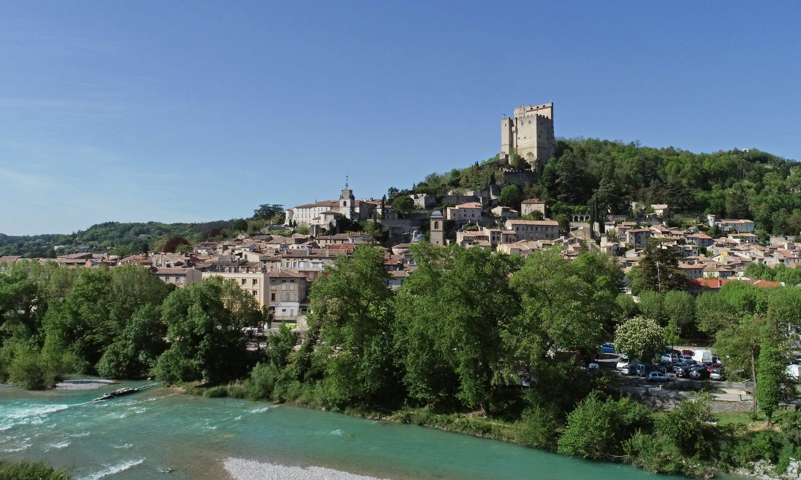

Standing 52 metres tall, the Tour de Crest is the tallest keep in France. It invites you to relive 900 years of history, from medieval stronghold to state prison, about 45 minutes from Les Cabritas.

From a disputed castle to a state prison
Construction of the Tour de Crest began in the 12th century: it formed the keep of an imposing castle, fought over between the Bishop of Die and the Count of Valentinois. From the 17th century onwards, the castle was dismantled, but the tower was kept and turned into a state prison until the mid-19th century. It notably held Protestants, prisoners detained under royal warrant (lettre de cachet), Canuts silk workers and insurgents from 1851.
An immersive visit through the centuries
Inside, staged scenes and reconstructed cells bring the tower's nine centuries of history to life. An immersive audio experience features the voice of a former 18th-century prison warden, sharing his experience and knowledge. From the summit, the tower overlooks the town of Crest and offers an exceptional panorama over the Drôme valley. The more adventurous can even try abseiling down its 42-metre eastern face, supervised by qualified climbing instructors.
Good to know before you visit
The visit pairs easily with a stroll through the town of Crest itself. The abseiling activity must be booked in advance with the instructors. It's an outing that will appeal to history buffs and families in search of a great view alike.
Practical info from Les Cabritas
- Distance from Flaviac: about 45 min by car
- Best time to go: all year round
- Great for: history, panoramic views, thrill-seekers (abseiling)
Fancy discovering the Tour de Crest from your cottage in Ardèche?
Les Cabritas welcomes you in Flaviac, at the heart of Ardèche, for a comfortable stay with a private pool, just a stone's throw from the region's most beautiful sites.
Check availability